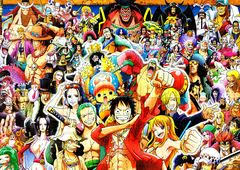

Frota e Nações Aliadas

Ao longo da jornada, a tripulação conquistou a confiança de reinos inteiros como Alabasta, Dressrosa e o País de Wano.

Ao longo da jornada, a tripulação conquistou a confiança de reinos inteiros como Alabasta, Dressrosa e o País de Wano.
Alianças temporárias tornaram-se permanentes para derrotar as maiores ameaças, incluindo os Supernovas e os seraphyns.